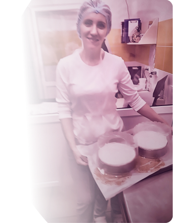

Профессия — кондитер

Я люблю своё дело. Люблю работать с разными форматами — от капкейков до сложных десертов. Но самое главное — я люблю доводить каждое изделие до совершенства. Если что-то пошло не так — цвет не тот, крем лёг неровно, — я переделаю столько раз, сколько потребуется. Пока не скажу: «Вот это оно».
За моими тортами — годы обучения и практики, множество курсов и постоянное желание становиться лучше. 2019 год — диплом, 3–4 категория и понимание: в этом деле невозможно остановиться.
Для меня важно, чтобы вы чувствовали себя спокойно и уверенно, доверяя мне свой праздник. А значит, моя работа должна быть безупречной. Не потому что я «дипломированный специалист». А потому что я уважаю своё дело, продукты и вас — тех, кто приходит ко мне за сладким чудом.